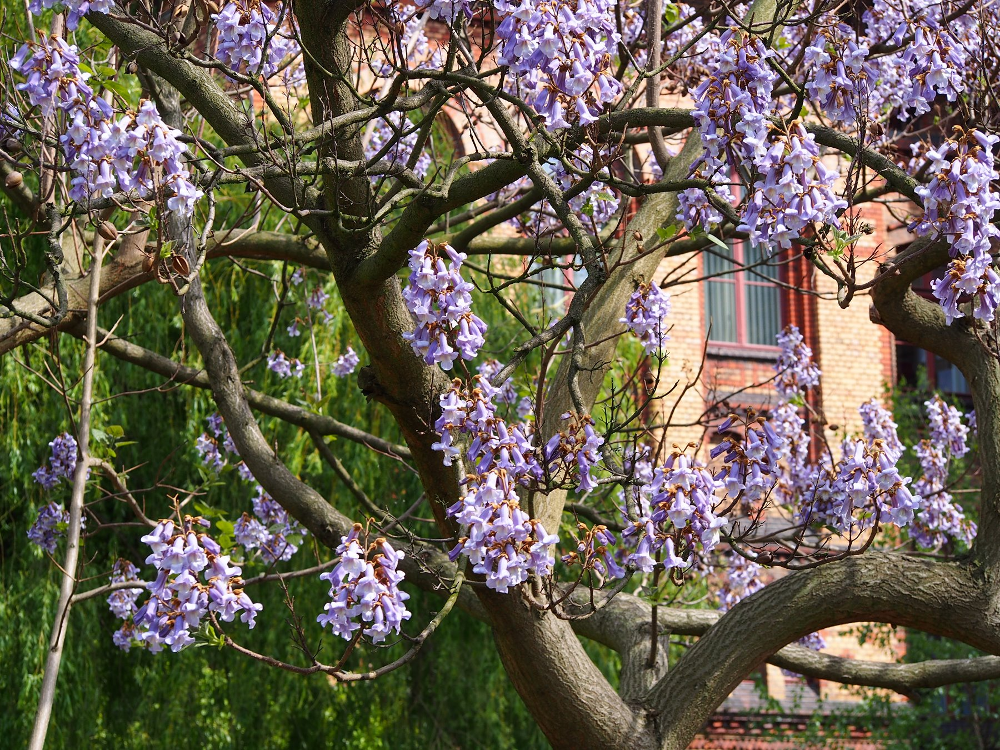

Paulownia timber · Southern Bulgaria · EU
Growing forests. Building long-term value.
A phased timber asset in Southern Bulgaria: 70 hectares of Paulownia Shan Tong developed through a 10 → 30 → 30 ha rollout.
EverRoot at a glance
A productive real asset, built in phases.
Planning assumptions are under validation and are not guarantees.
01 — Project thesis
Forestry structured as a long-term productive asset.
EverRoot is a planned industrial Paulownia plantation—not a multi-revenue agricultural experiment. The base commercial product is timber and roundwood.
EU real asset
Long-term control of suitable land in Southern Bulgaria, primarily through lease.
Timber first
Roundwood and logs form the base commercial strategy.
Water led
Drip irrigation and water infrastructure are designed around the selected site.
Lean operations
A compact core team supported by specialised contractors.
02 — Phased model
Pilot first. Scale after validation.
Three planting cohorts create a controlled route from pilot evidence to full scale.
Pilot gateFull scaling proceeds only after site, water, establishment and operating performance are reviewed.
A10 ha
Planting:Y0
Base harvest window:Y7
B30 ha
Planting:Y1
Base harvest window:Y8
C30 ha
Planting:Y2
Base harvest window:Y9
Base windows only; actual timing depends on biology and site performance.
Operating foundations
Designed around four practical constraints.
Land
Primarily long-term lease; purchase only where economically justified.
Water
Scalable drip irrigation; source and hydraulics confirmed after site selection.
Team
Founder/CEO and one technician, supported by external specialists and contract crews.
Product
Roundwood and logs as the base product; processing only as an optional future route.
Key project assumptions are being checked directly with specialist suppliers, engineers and market participants. Final technical parameters will be defined after the specific site is selected.

03 — Paulownia
Paulownia Shan Tong — the core of the production model.
A managed short-rotation timber crop with lightweight wood and the potential to regrow from an established root system.
Shan TongPlanned vegetatively propagated hybrid
625 trees/haTarget planting density
7 yearsBase first-rotation assumption
Actual results depend on site, water, genetics and management. Root-system regrowth is potential, not a guarantee.
04 — Asset life
The first rotation creates the asset. Later rotations may use the system already built.
R1 establishes the plantation, infrastructure and operating discipline. R2 may use the established root system and infrastructure, subject to actual performance.
The base investment model includes R1 + R2 only. R3+ represents potential asset life beyond base returns, not a guaranteed outcome.
R1Establish
→R2Base model
→R3Potential
→R4Outside forecast
→05 — Investment dialogue
Review the current project materials.
The detailed financial model, short business plan, full business plan and investment presentation are available selectively as they are finalised.
- Bottom-up project economics
- Phased capital requirements
- Technical and supplier assumptions
- Investment structure under development
No archived presentation is sent automatically.
06 — Founder
Founder & CEO
Yevhen Filippov
Responsible for project development, financial modelling, supplier coordination, investor communication and execution planning.
Start a conversation →07 — Contact
Discuss the EverRoot project.
Use the form above or write directly to request current materials and arrange a project discussion.